Is your mechanism both mediating and moderating? Disentangle indirect and interaction effects with potential outcomes decomposition.
Author
Jon Brauer
Published
January 30, 2024
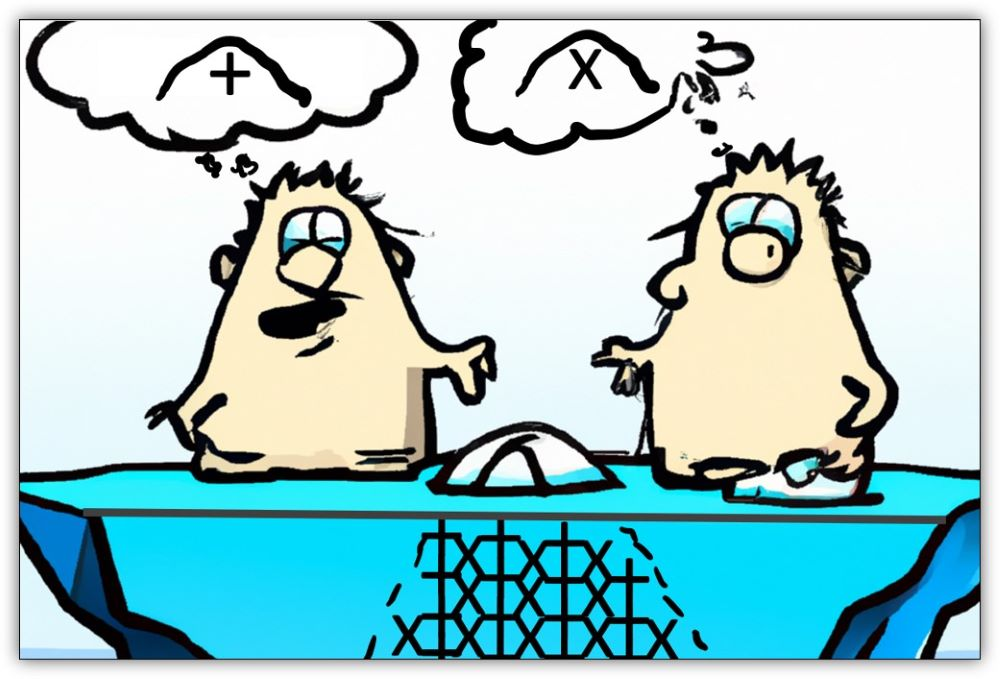
Two lemmings confused by exposure-mediator interactions (with help from DALL-E)
In Part 1, I covered issues related to estimating and interpreting interaction effects with binary or skewed count outcome variables. In Part 2, I introduce the need and a method for disentangling indirect and interaction effects in the presence of a potential exposure-mediator interaction.
My primary goals in this post are to (1) introduce counterfactual causality, exposure-mediator interactions, and key terminology and logic underlying a “causal mediation” approach to decomposing total effects within a potential outcomes framework; and (2) illustrate how to conduct total effect decomposition using simulated crime data with the CMAverse software package in R and introduce the important assumptions required to interpret the generated model parameters as estimates of causal effects.
Ready to dip your toes into the deep end?
Section A: Counterfactuals, potential outcomes, and effect decomposition
Comprehending counterfactuals
Have you ever stubbed your toe in the dark? Think back to one of those times. Did you say “ouch” or some other four letter word? What do you think caused you to stub your toe?
Let’s add some details to this example: Imagine that you are in an unfamiliar room, at night, with blackout curtains drawn closed over a single window. With the curtains closed, the room lacks sufficient light to help you see obstacles in your path. You are tip-toing across the room in search of a light switch when suddenly - “OUCH!” - you stub your toe on what feels like the leg of a chair. Your mind suddenly and angrily turns to the curtains: “If I had just left those #&%@! curtains open, I never would have stubbed my toe!”
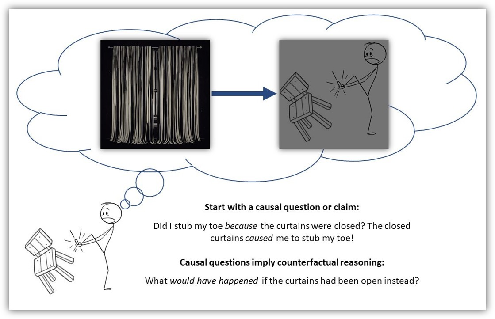
Your thoughts communicate a causal claim about the world - that the closed window curtain caused your pain.
There are two important things to note about this imaginary angry thought. First, it communicates a causal belief or claim. Specifically, your momentary thought communicates a belief that the closed window curtains are (at least partly) responsible for you stubbing your toe. Put differently, you view the closed curtains as a cause of the undesired outcome - perhaps not the only cause, but a noteworthy cause nonetheless.
Second, the structure of this angry thought conveys an implicit view of causal claims as dependent upon contrasts between plausible “potential outcomes” across observed and “counterfactual” conditions. That is, your momentary thought contrasts an observed or factual initial condition (the closed curtain) with a counterfactual initial condition (an open curtain), and then implies a different potential outcome (i.e, a stubbed versus an unstubbed toe) might have occurred if the observed initial condition would have been changed to the counterfactual condition instead.
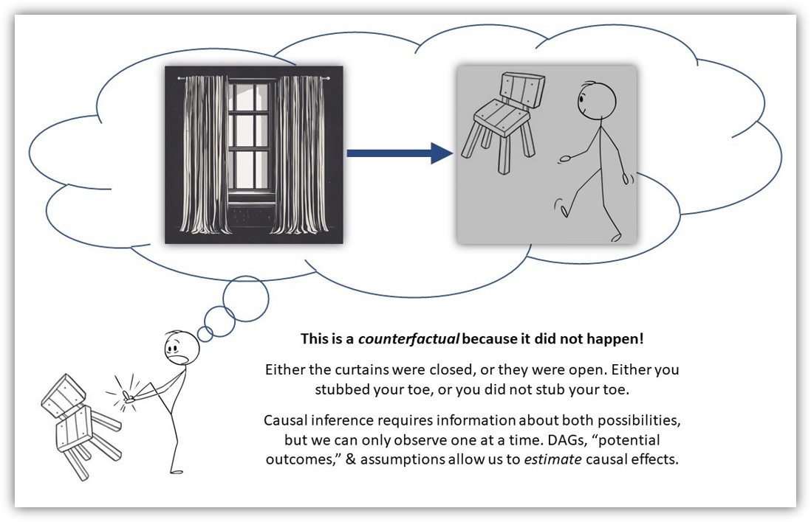
Causal claims depend upon contrasts between “potential outcomes” across observed and counterfactual conditions.
Many social scientific questions and claims reflect a similar counterfactual logic or, at least, can be recast in counterfactual terms:
If politicians had not campaigned on these platforms or had not signed those policies into law, then US incarceration rates would not have increased exponentially…
If we intervene in those neighborhoods in these ways, then crime rates in those neighborhoods will reduce…
If that group had those different characteristics, then they would have received better (worse) criminal justice outcomes…
If those adults had not experienced adverse childhood experiences, then they might not have participated in violent criminal behaviors…
In our earlier post on causation without correlation, we also noted that counterfactual reasoning is central to statistical tests of causal claims and even underlies justifications for randomized controlled trials themselves:
“We seem to engage in counterfactual thinking naturally, as it appears central to imagination and rational agency. Pearl and Mackenzie go so far as to claim that the ability to use counterfactual thinking to make “explanation-seeking inferences reliably and repeatably” is what “most distinguishes human from animal intelligence, as well as from model-blind versions of AI and machine learning” (2018, p.33). Moreover, the belief that randomization in controlled experiments offers a valid mechanism for making causal inferences relies upon counterfactual reasoning about potential outcomes; these counterfactual justifications underlying classical statistics were proposed by pioneers Jersey Neyman and Sir Ronald Fisher a century ago! Meanwhile, principled counterfactual frameworks using potential outcomes to make causal inferences with observational data have been in use since the 1970s and represent arguably the best approach to causal identification with observational data today.”
Prepare for potential outcomes notation
With that said, let’s recast our hypothetical toe-stubbing example into the language of counterfactuals and potential outcomes.
In this simple example, we have two initial “exposure” or “treatment” conditions: curtains closed and curtains open. We will denote curtains open as X=0 and curtains closed as X=1. Likewise, we have two “potential outcome” conditions: unstubbed toe, denoted as Y=0, and stubbed toe, denoted as Y=1.
Given these and our causal expectations, we can write two potential outcomes equations, Y(0)=0 (or Y0=0) and Y(1)=1 (or Y1=1), that respectively represent our expectation of a stubbed toe when curtains are closed and our expectation of an unstubbed toe when curtains are open. Here, I am (loosely) adopting Pearl’s do-calculus notation, where these two equations are abbreviations of longer structural equations for outcome probability expectations under different initial conditions where we do X=0 or X=1. The first equation, Y(0), is shorthand for Y(do[x=0])=0, which means that we expect the value of Y to equal “0” (i.e., we expect an unstubbed toe) when we do X=0 (i.e., when we open the curtains). Similarly, the second equation, Y(1), is shorthand for Y(do[x=1])=1, which means that we expect the value of Y to be “1” (i.e., we expect a stubbed toe) when we do X=1 (i.e., when we close the curtains). Technically, we expect the probability to be closer to zero or one when we do X=0 or X=1, respectively, but just bear with me here.
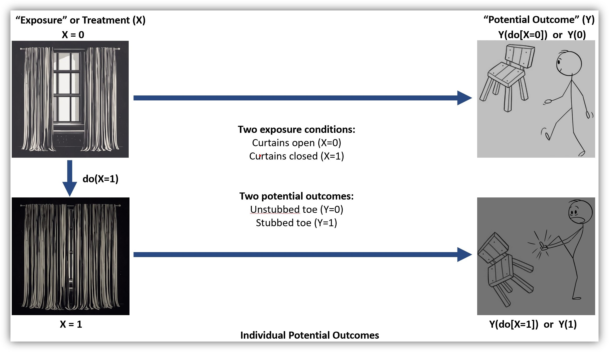
We can recast our thought experiment into the language of potential outcomes.
Additionally, as we have explained before, it is usually helpful to communicate our causal assumptions transparently using a causal diagram or a DAG. In the DAG below, we collapse our exposure conditions and potential outcomes into two variables connected by an arrow to represent our expectation of a causal relationship between curtains (open versus closed) and uttering a four-letter word (unstubbed versus stubbed toe).
Code
library(tidyverse)library(here)library(simstudy)# https://cran.r-project.org/web/packages/simstudy/vignettes/simstudy.html# https://kgoldfeld.github.io/simstudy/articles/simstudy.htmllibrary(ggplot2)library(patchwork)# library(psych) #detach to ensure alpha works with ggplot# library(devtools)# install_github("jtextor/dagitty/r")library(dagitty)library(ggdag)library(truncnorm)library(see)# devtools::install_github("strengejacke/strengejacke")library("sjPlot")library("ggthemes")library("margins")library("ggdist")library(gt)library(gtsummary)library(ggraph)library(CMAverse)library(ggExtra)library(ggeffects)library(ggblend)
Figure 1. Simple DAG representing causal effect of window curtains on stubbed toes (ouch!)
Is your mechanism a mediator, a moderator, or both?
Now, let’s step back and revisit our causal assumptions. Do we really think the closed curtains directly caused us to stub our toes? When interrogating a causal claim, it is usually a good idea to ask “how” and “why” questions, as doing so might illuminate mechanisms that can help us better identify, predict, and explain causal relationships. For instance, why do we think the closed curtains caused us to stub our toe? How might the closed curtains have caused such an outcome to occur?
In this case, you probably do not think that the closed window curtains directly caused toe stubbing. Rather, you likely expect that closed curtains indirectly caused this painful outcome by blocking light from entering the room through the window. In contrast, had the window curtains been open, then there might have been more ambient light in the room and, with sufficient light, you might have been better able to see and to avoid colliding with hazardous objects.
Let’s recast these more precise mechanistic beliefs as potential outcomes and communicate them graphically with a new DAG.
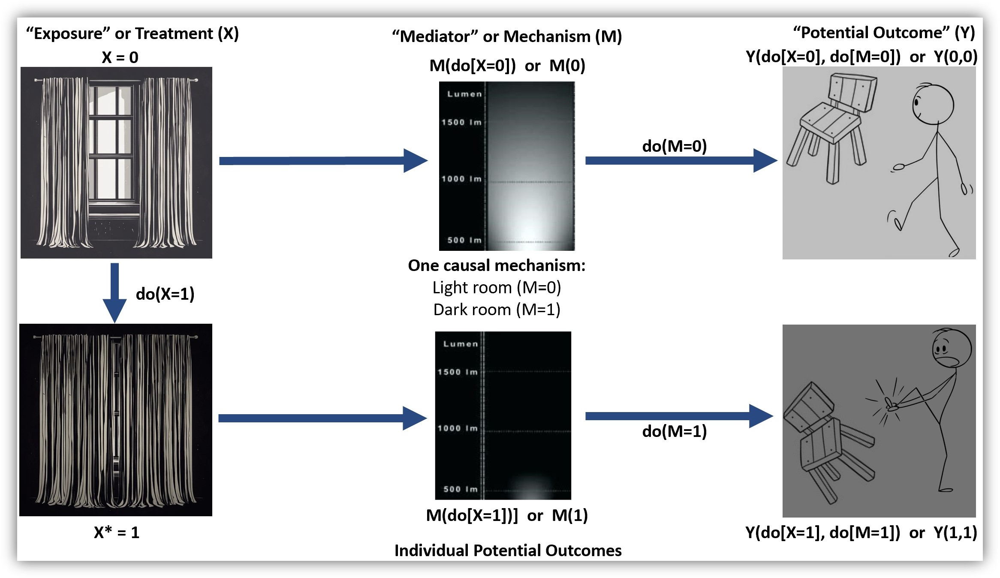
Specifying mechanisms can help us identify, predict, and explain causal relationships.
Figure 2. DAG of indirect causal effect of window curtains through light on stubbed toes
After examining this DAG, many of you might immediately assume it that it displays a classic indirect causal effect or mediating relationship.1 However, it is worth taking a moment to ponder whether you think light really is a mediator, or instead whether it is a moderator, or perhaps both? For example, consider that opening the curtains might reduce the chances of stubbing your toes when it is light outside and, hence, when doing so lets sufficient light in the room for you to see obstacles in your path. In contrast, when it is not light outside, opening the curtains might not let sufficient light in and, in those situations, opening the curtains (i.e., doing X=0) might not reduce (i.e., cause) the probability of stubbing toes.
Put differently, we might posit a heterogeneous causal effect of opening the curtains on the probability of toe stubbing, where the causal effect is strongest when accompanied by sufficient light but weakest or nonexistent when not accompanied by sufficient light.2
If you are a social scientist, you might also be accustomed to seeing an intersecting arrow in a causal diagram to depict this type of conditional effect or moderating relationship, like below:
Figure 3. Causal graph of light moderating the effect of window curtains on stubbed toes
So, is light a mediator, or a moderator, or is it both? Well, it turns out that mediation and moderation are not always as distinguishable as one might think.
In fact, this potential overlap is communicated by a proper DAG of mediating and moderating relationships. As we noted in Part 1, a traditional DAG does not use intersecting arrows to depict moderation. Rather, arrows indicate information flow, while heterogeneous (moderation) effects are captured in the functional forms of the mathematical equations used to model causal relationships. Likewise, below is a DAG that illustrates the possibility of (heterogeneous) direct and indirect effects of closed curtains on stubbing toes.
Figure 4. DAG of direct and indirect causal effects of window curtains through light on stubbed toes
An important takeaway message is that when we are examining causal systems that we think might involve a mediating mechanism, it is important to formally assess whether there is evidence of a non-negligible exposure-mediator interaction. An exposure-mediator interaction is a situation where the effect of the focal cause or exposure (opening or closing the curtains) on an outcome (toe stubbing) varies across the range of values of the posited mediating mechanism (ambient light levels in the room). Often, when testing mediation hypotheses, assessing this possibility will entail the inclusion of a multiplicative interaction term representing a potential exposure-mediator interaction (X*M) into your model. If the multiplicative interaction coefficient departs from zero, then you likely need to account for the joint possibility of mediation and moderation, or of indirect and interaction effects, in your modeling approach.3 In this situation, you can use the “causal mediation” or potential outcomes decomposition approach to sort them out.4
Four-way decomposition with toy example
The first thing to note about causal mediation effect decomposition is that it generates population-average inferences about counterfactual conditions. Recall, we cannot observe counterfactual causality among individual units because we can only observe one of two (or more) possible conditions for any individual unit. In our example, either the curtains were closed or open, and either we did or did not stub our toe. If the curtains were closed and we stubbed our toe, then we cannot observe the counterfactual condition in which the curtains instead would have been open to see what might have happened to our toes. However, we can make causal inferences about potential outcomes across counterfactual conditions with sufficient data from populations, a careful research design, and a proper causal (theoretical) model. In our example, that would require many observations of mechanism states (ambient light levels in the room) and outcome occurrences (stubbed toes) in the room under both exposure and non-exposure conditions (when the curtains were open and when curtains were closed) along with some assumptions.
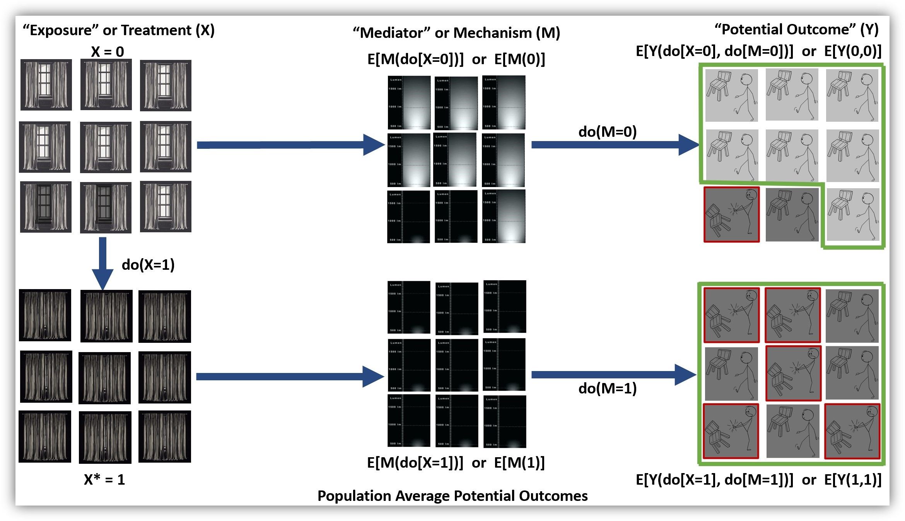
Given some key assumptions, we can estimate counterfactual causal effects as population-average differences in potential outcomes.
I will work through an example using simulated crime-relevant data later. First, though, I hope to build upon your intuitions about how this decomposition procedure works using some toy data based on our toe stubbing example. The goal of this example is to introduce you to key terminology and the conceptual basis for potential outcomes effect decomposition before getting into a more realistic applied example in which we will use software to perform the decomposition for us.
Note that this first toy example is intended as a simple application of VanderWeele’s initial 4-way effect decomposition example in which exposure and mediator values are set at specific counterfactual values (setting M to 0 or 1). Later, I will briefly introduce more complex counterfactual logic (e.g., setting M at its expected value when X=0 or X=1), which will be required for estimating and interpreting “natural” direct and indirect effects found in CMAverse output. For more and better resources on this topic, I recommend reading VanderWeele’s 2014 paper itself, as well as his tutorials and short video course on causal mediation, all of which are available on his website.
These data represent n = 21 curtains, light, and toe stubbing observations. In approximately half of the cases, the curtains were closed (CurtainClosed = 1; n = 11); in the other cases, the curtains were open (CurtainClosed = 0; n = 10). The overall probability of stubbing toes, or P(Y), is 0.33 (StubToe = 1; n = 7/21). We will use these hypothetical “observed” probabilities to represent (counterfactual) expectations.
Y0 and Y1
The probability of stubbing toes varies across exposure conditions. The probability of stubbing toes given the curtains were open, denoted by P(Y|do[X=0]) or abbreviated to Y0, is 0.2. That is, we stubbed our toes in 2 out of 10 cases in which curtains were open. In contrast, we stubbed our toes in 5 out of 11 cases in which curtains were closed, which means that P(Y|do[X=1]), or Y1, is equal to 0.45.
Y0 and Y1
Total Effect (TE)
In this example, we can calculate the total effect (TE) simply as the difference between the outcome probabilities across exposed and unexposed conditions. The estimated total effect of closing curtains on toe stubbing is Y1 - Y0, or 0.455 - 0.2, which equals 0.255. Put differently, opening curtains reduces the predicted probability of toe stubbing by about 26 percentage points (from ~45.5% to 20%).
Total effect (TE) = Y1 - Y0
M0 and M1
What about our mechanism? The probability of experiencing sufficient ambient light in the room to be able to see obstacles is P(M) = 0.43, since 9 out of 21 cases had a Light value = 1. Like stubbing our toes, the probability of experiencing sufficient light also varied across exposure conditions. Specifically, the probability of sufficient light given the curtains were open, denoted by P(M|do[X=0]) or abbreviated to M0, is 0.80 (i.e., 8/10). In contrast, there was sufficient light in the room in only 1 out of 11 cases in which the curtains were closed, which means that P(M|do[X=1]) or M1 = 0.09.
M0 and M1
Now, let’s consider jointly how the probability of stubbing our toes changes given different combinations of exposure and mediator conditions, or given that we open or close curtains and simultaneously observe the presence or absence of sufficient ambient light in the room.
Y00
Let’s start with the probability of stubbing toes given open curtains and the absence of sufficient light, which we will denote as P(Y|do[X=0],do[M=0]) and abbreviate to Y00. Given some assumptions, this quantity represents the expected probability of stubbing our toes if we do X=0 (i.e., if we open the curtains) and if we were able to set the mechanism to absent, or M=0. In other words, we are setting the room to insufficient light, or Light = 0, with the curtains open. There were 2 observed cases in which X=0 and M=0. Perhaps these cases represented especially dark nights during which the open window curtains were not effective in increasing the amount of ambient light in the room. In half of these cases (1/2), we stubbed our toes, meaning Y00 = 0.5.
Y00
Y10
Now, imagine we do X=1 instead (i.e., we close the curtains) and we continue hold the mechanism constant at the value of “0”. That is, we set the room to insufficient light, or Light = 0, with the curtains closed. There are ten observed cases in which the curtains were closed and there was insufficient ambient light in the room. We stubbed our toes in five of these ten cases, meaning P(Y|do[X=1],do[M=0]) or Y10 = 0.5.
Y10
CDE
With the quantities above, we now have enough information to calculate the controlled direct effect, or CDE, of X on Y. Conceptually, the CDE of an exposure is the expected effect that an exposure would have on the outcome if the mechanism (M) were fixed at a specific value (m). Here is the potential outcomes equation for the CDE:
CDE = Y1m - Y0m, where we set M to a specific value “m”
Commonly, we might wish to estimate the controlled direct effect when the mediator is equal to zero. In this case, the CDE of an exposure is the expected effect that an exposure would have on the outcome if the mechanism were removed or fixed at M=0. Here, when we set M to m=0, the CDE is equivalent to the difference between Y10 and Y00, or the estimated effect on Y of doing X in the absence of the mechanism:
CDE(M=0) = Y10 - Y00
= 0.5 - 0.5
= 0.0
In essence, this value of 0.0 indicates that doing X = 1 (i.e., closing the curtains) instead of doing X = 0 is expected to have no effect on the probability of toe stubbing once we remove from the equation the effect that opening curtains has on the mechanism (ie., letting sufficient ambient light into the room). Put differently, closing the window curtains is not expected to have a direct effect on stubbing toes above and beyond any indirect effects it has on the ambient light levels in the room.
Think of it this way: You are in a dark room with curtains closed (do[X=1],do[M=0]) and, after opening the curtains, the room remained just as dark as it was before (do[X=0],do[M=0]). A CDE = 0 indicates that the probability of stubbing your toes would remain unchanged in that situation, where opening or closing the curtains does not add any ambient light into the dark room (Y10 - Y00 = 0). Either way, it is dark, and you are predicted to have a coinflip’s chance (Y10 = Y00 = .50) of stubbing your toes.
Controlled direct effect (CDE) = Y1m - Y0m
Y01
In addition to Y10 and Y00, there are additional quantities we can estimate that will help us further decompose the total effect into other meaningful components like the CDE. For instance, what if we were to open the curtains (do[X=0]) while also holding constant a sufficient amount of ambient light in the room (do[M=1])? In our toy data, there were eight observations in which the windows were open and we experienced sufficient ambient light in the room that allowed us to see. We stubbed our toe in only one of these eight cases (1/8), so P(Y|do[X=0],do[M=1]) or Y01 = 0.125.
Y01
Y11
Now, imagine instead we close the curtains (do[X=1]) and continue holding a sufficient amount of ambient light in the room constant (do[M=1]). There is only one observation in these toy data with X=1 and M=1. Perhaps a hall light was on, or perhaps we used our cell phone backlight to provide ambient light when the curtains were closed. In any case, we did not stub our toe in this one instance (0/1), so P(Y|do[X=1],do[M=1]) or Y11 = 0.0.
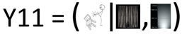
Y11
TE = CDE + INTref + INTmed + PIE
With the various quantities calculated above (e.g., M0; M1; Y00; Y10; Y01; Y11), now we have enough information to decompose the total effect of X on Y into four different components. Specifically, the total effect, or TE, is a composite value representing the sum of the controlled direct effect (CDE); reference interaction (INTref); mediated interaction (INTmed); and the pure indirect effect (PIE). I already covered the CDE above. Below, I will describe the remaining three components: INTref, INTmed, and PIE.
INTref
When we observe a nonzero total effect of an exposure on an outcome, a common thing to do is to test whether the exposure operates indirectly through a posited mediating mechanism(s). However, an observed total effect might wholly (or partly) reflect the operation of an additive interaction between the exposure and a mechanism rather than (or in addition to) a mediation process as is often assumed.
Yes, you read that right. An observed total effect of an exposure on an outcome might (only) reflect the presence of an interaction effect, and failure to account for this when testing indirect effect hypotheses using traditional mediation tests could result in erroneously attributing moderation to mediation, or vice versa. Moderator madness indeed! If you cannot recall learning about this in your graduate stats courses, then you are not alone.
At this point, you can probably guess that we account for this possibility by decomposing the total effect into its various possible constituent parts. As implied here, one of the components that may comprise a total effect is the reference interaction (INTref), which is an additive interaction that operates only if mediator is present in the absence of the exposure. As VanderWeele explains (p.750), the reference interaction component is nonzero when “the effect on the outcome of setting both the exposure and the mediator to present differs from the sum of the effect of having only the exposure present and the effect of having only the mediator present.”
Though that might sound confusing, this is essentially a classic interaction effect. Do you find yourself preferring our probability notation yet? Either way, let’s use it to calculate INTref.
The INTref component is nonzero when [P(Y|do[X=1],do[M=1]) - P(Y|do[X=0],do[M=0])] is not equal to [(P(Y|do[X=1]) - P(Y|do[X=0])] + [(P(Y|do[M=1]) - P(Y|do[M=0])]. Let’s check this with our toy data, using our abbreviated notation for quantities that we have already calculated:
Here, our toy data show a small reference interaction. What does this mean and where did it come from? Well, first remember that a reference interaction is an additive interaction that operates only if mediator is present in the absence of the exposure. Likewise, we observed the mechanism (sufficient ambient light) when the curtains were open and when they were closed, so a nonzero reference interaction estimate is possible. The logic here, which mirrors that of a classic interaction, is that we must be able to assess the effect of doing X=1 (versus X=0) both in the absence and in the presence of the mechanism. Then, if the estimated effect of doing X differs across those conditions (or across levels of the mechanism), we would have a nonzero exposure-mediator “reference interaction.”
A reference interaction is not what it sounds like. Well, maybe it is, if it sounds like an additive interaction effect that operates only if mediator is present in the absence of the exposure. (DALL-E)
Now, recall that we did not stub our toes in that one time we observed closed curtains and the mechanism present (Y11 = 0/1 = 0.0). However, we did stub our toe in one of the eight instances with open curtains and the mechanism present (Y01 = 1/8 = 0.125). Meanwhile, the probability of stubbing our toes was equal across exposure conditions in the absence of the mediator (Y10 = 5/10 = 0.5; Y00 = 1/2 = 0.5).
From these comparisons, it appears that doing X=1 instead of X=0 (closing curtains) slightly reduced the probability of toe stubbing with the mechanism present (Y11 - Y01 = 0.0 - 0.125 = -.125), whereas doing X=1 instead of X=0 had no effect on the probability of toe stubbing with the mechanism absent (Y10 - Y00 = 0.5 - 0.5 = 0). In the equation above, we essentially used these same comparisons and then weighted the resulting difference-in-differences value by the expectation of observing the mediator in the absence of exposure (i.e., M0 = probability of observing M=1 given we do[X=0]).5
Strong caveat: If these were real data, I would strongly recommend against making any inferences from this INTref estimate given it was generated using a very small sample (e.g., only n=1 observation for one of the cells). Unfortunately, such noisy and unreliable inferences are all too common in criminology. But, that is an entry for another day.
One final point about the INTref component: As VanderWeele explains (p.755), the INTref “requires the mediator to operate, but the effect does not come about by the exposure changing the mediator — it simply requires that the mediator is present even when the exposure is absent; the effect is ‘unmediated,’ in the sense that it does not operate by the exposure changing the mediator, but it requires the presence of the mediator nonetheless.” In contrast, the remaining two components (PIE and INTmed) both involve mediation such that doing X (i.e., the exposure) affects the outcome at least partly by changing the mediator. Now, let’s move to the next component.
PIE
As noted above, when we observe a total effect of an exposure on an outcome, that total effect might also reflect an indirect effect of the exposure operating through a specific mediating mechanism(s). In this four-way decomposition, the “pure indirect effect” (PIE) component is the analogue of this classic indirect effect. Formally, the PIE component represents the effect of the mediator in the absence of the exposure, and it is non-zero only if: (1) the exposure itself affects mediator and (2) the mediator affects the outcome when the exposure is absent.
Here, closing curtains decreases light in the room, and light reduces the chances of stubbing toes when the curtains are open. Using the equations in VanderWeele’s Table 1, we can estimate the PIE component using the quantities calculated earlier by estimating the effect of doing M in the absence of X (Y01 - Y00) and then weighting this contrast by the effect of doing X on the mediator (M1-M0):
Recall, the total effect of closing the curtains on toe stubbing was 0.255. Closing curtains primarily increases our chances of stubbed toes indirectly by blocking light out of the room. In this case, the indirect effect estimate is quite close to the total effect estimate (0.266 versus 0.255). However, it does not always work out this way. In fact, as we will see, the only reason it worked out this way in our toy example is because the other two nonzero components, INTref and INTmed, were of approximately equal magnitude with opposite signs, so they cancel each other out when summing for the total effect.
This is an important point. If we had relied strictly on the total effect, or on traditional mediation test procedures, to make inferences about the exposure’s effect on the outcome via the primary mediating mechanism, then we would have been close to accurately estimating the indirect effect. However, we would have done so only by luck or accident, and we would have missed completely the other two nonzero interaction components.
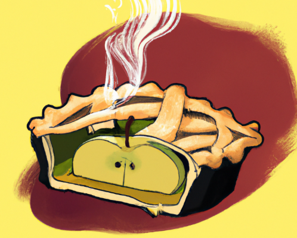
Pure indirect effects: As American as apple PIE? (DALL-E)
Speaking of those other two interaction components, we already discussed INTref; now, let’s move onto INTmed, our fourth component.
INTmed
So far, we have discussed controlled direct effects, reference interaction effects, and pure indirect effects. Each of these is analogous (in certain situations) to well-known direct effects, interaction effects (moderation), and indirect effects (mediation), though their empirical connections as distinct components of a total effect may be less widely appreciated or understood.
This is good time to introduce the most important use cases for decomposition: When there is no exposure-mediator interaction (and strong causal assumptions hold), then traditional approaches to detecting interaction effects or testing indirect effects are often reliable and decomposition procedures may be unnecessary. However, when there is a nonzero exposure-mediator interaction, then traditional approaches become problematic, decomposition is essential, and the constituent components comprising a total effect become more complex - and potentially more numerous. For instance, in such situations, we may find a fourth nonzero component also contributes to the total effect - the “mediated interaction” or INTmed.
The “mediated interaction” or INTmed component represents an additive interaction that operates only if the exposure has an effect on the mechanism. As VanderWeele explains (p.750), when the INTmed component is nonzero, this means that “the exposure causes the mediator, and the presence of the mediator is itself necessary for the exposure to have an effect on the outcome.”
In our toy example, the probability of stubbing our toes varies across values of X (i.e., whether curtains are open or closed); that is, P(Y|do[X=x],do[M=1]) varies across do[X=0] and do[X=1]. Given the presence of the mechanism (sufficient ambient light), the probability of stubbing toes is higher when the exposure is “absent” (X=0, or curtains open) than it is when the exposure is present (X=1, or curtains closed). We can check this with our data:
We can also use the quantities estimated earlier to calculate the INTmed component. Like the INTref component, we are essentially generating a weighted difference-in-difference contrast. Like the PIE component, we are weighting that contrast by the effect of doing X on the mediator (M1 - M0):
Recall, when the mechanism was present in this toy example (i.e., Light=1), toe stubbing was less likely when the curtains were closed (Y11 = 0.0) than when they were open (Y01 = 0.125). In other words, closing the curtains (do[X=1]) reduced the probability of toe stubbing in the presence of the mechanism. However, this effect was only observed in the presence of the mechanism; when Light=0, the probability of toe stubbing was the same whether the curtains were open (Y00 = 0.5) or closed (Y10 = 0.5). Moreover, closing the curtain reduced the probability of observing the mechanism (M1 - M0 = 0.09 - 0.80 = -0.71). So, the exposure causes this conditional effect, meaning it is a mediated interaction (INTmed).
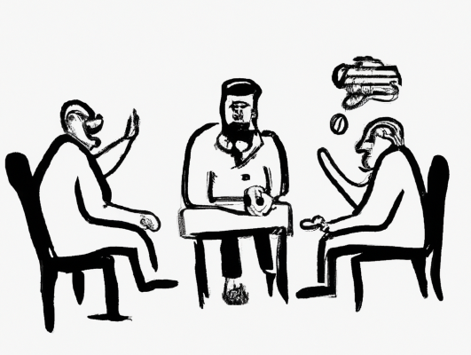
A mediated interaction is not what it sounds like either. Unless it sounds like an additive interaction that operates only if the exposure has an effect on the mechanism. (DALL-E)
Put differently, since opening the curtains increases light in the room, and opening the curtains appears to increase toe stubbing when light is present, then the exposure actually increases risks of toe stubbing by increasing the conditions (light) under which it amplifies the risks of the outcome occurring. Again, this is a mediated interaction.
Another caveat: I strongly caution against such real world inferences when data are so sparse; like our INTref, this mediated interaction is based on a comparison generated from n=1 observation in one of the cells! If we had more (and real) data, I highly doubt we would observe a negative effect of closing curtains on toe stubbing in the presence of the mechanism. Still, despite the implausibility of this toy example, I hope it helps you better understand the components that comprise a total effect.
Revisiting TE
Before moving onto a simulated example, I want to revisit the total effect (TE) that we just decomposed into four component parts. Recall earlier how we calculated the total effect of X on Y as the difference between the outcome probabilities across exposed and unexposed conditions (Y1 - Y0)?
TE = Y1 - Y0
= 0.455 - .20
= 0.255
Well, after decomposing these four constituent components of the total effect, we can also calculate the total effect by summing these four components. This is a good way to check that our calculations were correct!
TE = CDE + INTref + INTmed + PIE
= 0 + (-0.1) + 0.089 + 0.266
= 0.255
It worked! Whew.
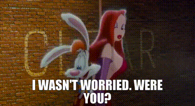
I wasn’t worried. Were you?
Section B. Effect Decomposition with Simulated Data and CMAverse
At this point, I am hoping the toy example above helped build your intuitions about the 4-way decomposition process and that you feel ready to move onto a more complicated and realistic use case with simulated data and the CMAverse R package. Though we took a long and winding road to arrive here, as I explained in our Moderator Madness, Part 1 post, this is the goal that initially motivated this two-part blog series:
The central aim of [“Moderator Madness, Part 2”] will be to illustrate how exposure-mediator interactions entangle mediation and moderation processes in a way that requires decomposition of the effect. Effect decomposition is accomplished with a causal mediation approach that involves clever estimation of potential outcomes and transparent acknowledgement of strong causal assumptions underlying those estimates…”
“…[I]n Part 2 of the blog series, I will pick up here using the same simulated data from this example to illustrate how the addition of an exposure-mediator interaction entangles indirect and interaction effects in a way that requires decomposition of these effects. I will also illustrate how one can accomplish effect decomposition with a causal mediation approach that involves clever estimation of potential outcomes and transparent acknowledgement of strong causal assumptions underlying those estimates.”
Before diving in, I should explain that this section is meant for social scientists that already have some familiarity with traditional “product of coefficients (ab path) approaches to modeling mediation processes and are looking for a very basic introduction to less well known yet generally preferred. If you find yourself in the position of testing or estimating indirect effects and unaware of the causal mediation approach, then I strongly encourage you to read more on the topic. There are lots of excellent summaries, overviews of software alternatives, and introductory primers on causal mediation and on CMAverse specifically. Additionally, the CMAverse quickstart website itself is a great place to start. If nothing else, I hope this entry serves as a segue for folks curious about advancing beyond traditional mediation approaches by learning more about causal mediation approaches.6
In the second example, I assume that the true data generating process underlying both imaginary papers (i.e., “paper 1” and “paper 2” in our example above) is an integrated causal model in which moral beliefs is both a mediating and moderating mechanism. That is, in the simulated data for the second example, there is a true indirect effect of parental support on delinquency through strong moral beliefs as well as a direct effect of parental support on delinquency that varies systematically across levels of (i.e., “interacts with”) strong moral beliefs.
Thus, the simulated data here contain the same three focal variables. The exposure, parental support practices, is conceptualized as a variable measure of parental intervention(s) on youth attitudes and behaviors; it is generated here as a continuous, normally distributed, mean-centered variable. The mechanism, youths’ strong moral beliefs, is generated as a negatively skewed ordinal variable ranging from 0 to 5, which was created by reverse-scoring a truncated Poisson-distributed weak moral beliefs variable. The outcome, delinquency, is a positively skewed, Poisson-distributed event count variable ranging from 0 to a truncated theoretical maximum of 7.
Again, the simulated data will be generated using the following hypothetical causal mediation and moderation assumptions: Parental support practices are a somewhat effective cause of youth’s internalization of strong moral beliefs, and strong moral beliefs effectively cause fewer delinquent behavior events (i.e., they constrain temptations, promote resistance to, or encourage selection out of delinquency). Thus, the data generating processes include causal mediation or indirect effects of an exposure through a mechanism.
Additionally, parental support directly discourages or reduces involvement in youth delinquency.8 However, this effect varies across levels of the mechanism. Specifically, parental support’s negative effect on youth delinquency is most pronounced among youth with weak moral beliefs (i.e., low strong moral beliefs index scores); these youth are most at risk of engaging in delinquency, so effective parental interventions have the greatest potential to enact behavioral change among these youth. In contrast, youth with strong moral beliefs are highly unlikely to engage in delinquency irrespective of the degree of parental support they experience; therefore, parental support is largely ineffective among youth with the highest strong moral beliefs index scores. This means the data generating processes include moderation or interaction effects.
Moreover, since parental support both operates indirectly through and interacts with youth’s strong moral beliefs, the data generating processes also involve an exposure-mediator interaction. That is, some of parental support’s conditional effect on delinquency might be attributable to a reference interaction, or heterogeneity in the effect of parental support across levels of the mechanism (e.g., across youth with weak versus strong moral beliefs). Yet, since parental support also partly causes strong moral beliefs, then parental support is partly responsible for setting the very levels across which it conditionally affects delinquency. This means that some of parental support’s conditional effect also is likely attributable to a mediated interaction.
In causal mediation analysis using potential outcomes, the mediated interaction component will be variously attributed to quantities representing the direct effect of the exposure or, instead, to quantities representing the indirect effect through the mechanism; which a researcher chooses to report will depend upon one’s focal research questions and estimand of interest. I will explain this in more detail later. For now, let’s check out a modified version of Part 1’s basic DAG, which concisely communicates the causal assumptions underlying the data generating processes for our simulation.
Code
# modified from Valeri & VanderWeele 2013, Fig.2 # causalDAG2 <- dagify(# Y ~ A + M + C1 + C2,# M ~ A + C1 + C2,# A ~ C1,# exposure = "A",# outcome = "Y",# coords=list(# x=c(A=1, M=1.5, Y=2, C1=1.5, C2=1.9),# y=c(A=1, M=2, Y=1, C1=1.4, C2=1.75)# )) %>% tidy_dagitty() # change to simplified version from # https://bs1125.github.io/CMAverse/articles/quickstart.htmlcausalDAG2 <-dagify( Y ~ A + M + C, M ~ A + C, A ~ C,exposure ="A",outcome ="Y",coords=list(x=c(A=1, M=1.5, Y=2, C=1.5),y=c(A=1, M=2, Y=1, C=3) )) %>%tidy_dagitty()#shorten edgescausalDAG2p <-shorten_dag_arrows(causalDAG2, 0.08)#create factor variable to isolate edge of interest, permits specifying edge colorcausalDAG2p <- causalDAG2p %>% dplyr::mutate(myedge1 =if_else(causalDAG2p$data$name =="C", "yes", "no"),# myedge1 = if_else(causalDAG2p$data$name == "C1" | causalDAG2p$data$name == "C2",# "yes", "no"), modlinetype =ifelse(myedge1 =="yes", "solid", "solid") #change 2nd "solid" to "dashed" if desired ) #plot dagfig4 <- causalDAG2p %>%ggplot(aes(x=x, y=y, xend=xend, yend=yend)) +geom_dag_edges(aes(x = xstart, y = ystart, edge_color=myedge1, edge_linetype = modlinetype), show.legend =FALSE) +geom_dag_text(label=c("A\n(Parental\nSupport)", "C\n(Measured Confounders\nNot Affected by Exposure)", "M\n(Moral\nBeliefs)", "Y\n(Delinquency)"), color="#56B4E9") +theme_dag() +guides(fill ='none', color ='none') +scale_y_continuous(expand=expansion(mult=c(0.2,0.2))) +#change default expansion on y-axis min & max# ggtitle("Modified Figure 2 from Valeri & VanderWeele 2013") + scale_edge_colour_manual(values=c("darkgrey", "maroon")) +theme(plot.title =element_text(size =12))
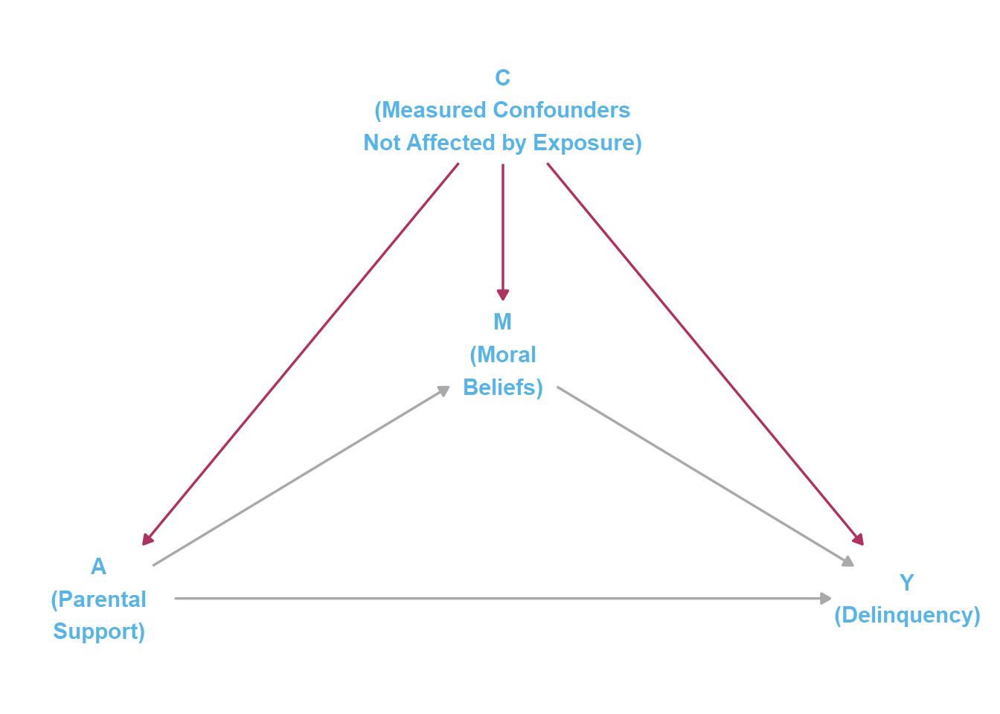
Figure 4. DAG illustrating ‘no unmeasured confounding’ assumptions underlying causal mediation (modified from Fig.2 in Valeri & VanderWeele 2013)
“Causal mediation” assumptions
Readers might notice some changes here to Part 1’s DAG, such as the addition of common “causal mediation” notations to variable names (e.g. exposure label “A” to “Parental Support” variable) and the addition of “measured confounders.” With the addition of confounders, I hope to remind readers that interpreting results and making causal inferences from results of “causal mediation” models - as well as from traditional mediation models - requires important, and perhaps untenable, assumptions about the lack of unmeasured sources of confounding of the X-M, M-Y, or X-Y relationships.9Valeri and VanderWeele (2013) succinctly describe these essential assumptions:
“…controlled direct effects require (i) no unmeasured treatment-outcome confounding and (ii) no unmeasured mediator-outcome confounding. Natural direct and indirect effects require these assumptions and also (iii) no unmeasured treatment-mediator confounding and (iv) no mediator-outcome confounder affected by treatment.” (p.??)
“It is important to note that randomizing the treatment is not enough to rule out confounding issues in mediation analysis. This is because randomization of the treatment rules out the problem of treatment-outcome and treatment-mediator confounding but does not guarantee that the assumption of no confounding of mediator-outcome relationship holds. This is because even if the treatment is randomized, the mediator generally will not be.” (p.??)
I think my simulated example is complex enough for an introductory tutorial without including any confounding of the modeled relationships. However, once one is familiar with CMAverse code, terminology, and interpretation of results, it is relatively trivial to extend the example by including and adjusting for measured confounders.
Terminology
Before getting to the simulation, it is probably a good idea to introduce some minor changes in terminology and basic notation that you will encounter when using CMAverse to perform effect decomposition.
Variables
First, the focal variables are labeled as follows:
Exposure == A (Alternatively referred to as “X” above)
Mediator == M
Outcome == Y
Confounders == C (Ignored throughout, but choose wisely)
Though I do not include confounders in this example, two types of outcome confounders are sometimes distinguished as C1 (exposure-outcome confounders) and C2 (mediator-outcome confounders). Note that there may also be potential confounding of the exposure-mediator relationship.
Controlled versus Natural Effects
Second, depending upon the model and options selected, the CMAverse output may contain terms that do not exactly match the four-way effect decomposition components described above.
Direct Effects: You should recognize the controlled direct effect (CDE). However, the output may also contain estimates for a pure natural direct effect (PNDE) and a total natural direct effect (TNDE).
Indirect Effects: Instead of encountering a pure indirect effect (PIE) estimate, the output might instead contain estimates for a pure natural indirect effect and a total natural indirect effect.
You can find more detailed descriptions elsewhere of the differences between controlled and natural effects. As explained above, controlled direct effects hold the mediator constant at a specific value (M=m). For example, a controlled direct effect (CDE) might contrast expected outcomes across X=0 and X=1 while holding the mechanism constant at a specific value like M=0.
In contrast, understanding natural effects requires comprehending some of those counterfactual contrasts that we illustrated earlier. Remember that, in the presence of mediation, the mediator is expected to change as the exposure changes. So, setting the mediator to a constant value (e.g., M=0) may not provide a realistic or “natural” contrast. Natural effects allow the mediator to vary as it “naturally” would across exposure conditions. Natural effects are then estimated by holding the mediator constant at specific counterfactual values that the mediator would be expected to take under specified exposure conditions, such as setting M at the value we would expect it to be when we do[X=0] (i.e., M0) or when we do[X=1] (i.e., M1).
For example, a (pure) natural direct effect might be estimated as a contrast between: (1) the expected outcome value when X=1 and M is set to its expected value when X=0 and (2) the expected outcome when X=0 and M is still set to its expected value when X=0. Modifying the notation used above, you might summarize this contrast as Y(do[X=1],do[MX=0]) - Y(do[X=0],do[MX=0]), or Y10 - Y00.10
Once you wrap your head around these important distinctions between natural and controlled effects, then you may find yourself beginning to comprehend other important issues related to mediation, moderation, and effect decomposition.
First, in a linear model without interactions (i.e., where INTref=0 and INTmed=0), the CDE estimates will not change across different values of M. Additionally, in such models, controlled and natural direct effects will converge on the same estimates. This is because doing X=1 (versus X=0) will have the same effect on Y at all values of M, so doing M=0 or doing MX=0 will generate the same effect estimate.
Second, as you have probably figured out by now, things are not as straightforward in more complex models with nonlinear link functions or exposure-mediator interactions. Specifically, when there are nonlinearities or exposure-mediator interactions, one could conceivably estimate a different CDE estimate for every possible value of M! This makes it impossible to perform effect decomposition in the presence of an interaction using controlled effects. However, the counterfactual contrasts underlying natural direct and indirect effect estimates are uniquely defined so there is a single value even in the presence of nonlinearities and exposure-mediator interactions. This permits us to perform effect decomposition even in those situations involving more complex causal relationships.
Pure versus Total Effects
I just told you that there is only one natural direct and natural indirect effect. Yet, your CMAverse output will probably show more than one natural direct and indirect effect estimate! Do not lose trust in me just yet. It is more accurate to say that there is only one “pure” natural direct effect, and there is only one “total” natural direct effect estimate.
When interpreting “pure” and “total” effects, remember the “total” cat won the fight over the INTmed component.
So, what is the differences between “pure” and “total” effects? It boils down to that nonzero “mediated interaction” or INTmed estimate we find when there is an exposure-mediator interaction. Recall, the INTmed estimate describes how, in the presence of both mediation and interaction, we can contribute some differences in the effect of X on Y across different levels of M to the fact that X causes different levels of M. So, in a decomposition, should we attribute INTmed effects to mediation processes or to moderation processes? That is, are they indirect effects, or interaction effects? Fundamentally, they are both, but there may be advantages to attributing that INTmed component to the “direct” effect of X on Y at specific counterfactual values of M (i.e., absorbed into heterogeneous estimates of direct effects across values of M) or to the “indirect” effect of X on Y through M. In any case, there are a few important points to remember when interpreting these effects.
First, “pure” effects do not include the INTmed component, whereas “total” effects do include the INTmed component. So, for instance, a “pure direct effect” essentially summarizes the effect of X on Y that is due to its controlled direct effect (CDE) and heterogeneity across M that is not due to mediation (i.e. to INTref but not INTmed), while a “total indirect effect” contains both the “pure” indirect effect (PIE) of X on Y through M and any effect of X on Y across levels of M that is due to mediation (i.e., INTmed).
Second, we always pair the following effect estimates:
Pure natural direct effect & total natural indirect effect (PNDE & TNIE)
Total natural direct effect & pure natural direct effect (TNDE & PNIE)
Perhaps the reasons we do this are now obvious to you. These pairings ensure that the INTmed component is always counted once and only once - either in the (total) direct effect estimate or in the (total) indirect effect estimate. Likewise, in a linear model, the PNDE + TNIE estimates will sum to the same value as the TNDE + PNIE estimates. Which pair you choose to interpret, then, depends upon your research question, goals, and estimand of interest.
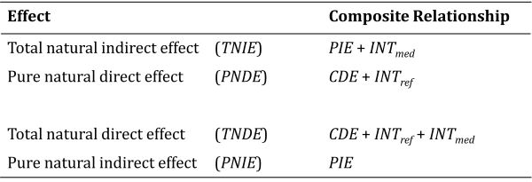
Relationship between 4-way effect decomposition and CMAverse effect estimates. Modified from Table 4 in Vanderweele 2014
Third, in the absence of an exposure-mediator interaction - such as when the interaction term equals zero or when you ignore a nonzero interaction term by not specifying or including it in the model - then the CDE, TNDE, and PNDE estimates all will converge to the same value. Conceptually, this is because the INTref and INTmed components will be fixed to zero, either by the data or by the researcher.
That’s enough talking. Let’s start walking with a simulation.
Simulate data
Unlike in Part 1, this analysis will be based on n=10,000 simulated observations, which will allow us to generate precise estimates of the focal components. We have more than enough going on; we do not need to deal simultaneously with issues related to noisy estimates.
Code
#|message=FALSE options(scipen=0, digits =3)# Simulate data (Sim.2)set.seed(1138)n <-10000def2 <-defData(varname ="ParentSupport", dist ="normal", formula =0, variance =1)def2 <-defData(def2, varname ="WeakMoralBlfs", dist ="poisson",formula ="-.3 + (-.3)*ParentSupport", link ="log")def2 <-defData(def2, varname ="Delinquency", dist ="poisson",formula ="-.7 + (-.25)*ParentSupport + .4*WeakMoralBlfs + (-.15)*ParentSupport*WeakMoralBlfs", link ="log")simdat2 <-genData(n, def2)# simdat2 %>% sjPlot::view_df()# simdat2 %>% # ggplot(aes(x=WeakMoralBlfs, y=Delinquency)) +# geom_point()# cap LowMoral at 5 (0-5 item) - randomly replace oob values with values in bounds inds2 <- simdat2$WeakMoralBlfs >5simdat2$WeakMoralBlfs[inds2] <-sample(0:5, sum(inds2), replace =TRUE)simdat2$StrgMoralBlfs <-5- simdat2$WeakMoralBlfs# cap Delinquency at 7 (0-7 item) - randomly replace oob values with in bounds valuesinds2 <- simdat2$Delinquency >7simdat2$Delinquency[inds2] <-sample(0:7, sum(inds2), replace =TRUE)# simdat2 %>% sjPlot::view_df()# simdat2 %>%# ggplot(aes(x=WeakMoralBlfs, y=Delinquency)) +# geom_point()#Even with n=10k, need to consider collapsing low values for StrgMoralBlfs and recenter to min=0#Raise points re: rare events & skewed data# out of n=10k, 18.1% of cases have StrgMoralBlfs <=3 # (nrow(subset(simdat2, StrgMoralBlfs <=3))/10000)*100# out of n=10k, 1.02% (n=102) of cases have StrgMoralBlfs <=1 # (nrow(subset(simdat2, StrgMoralBlfs <=1))/10000)*100# out of n=10k, 0.17% (n=17) of cases have StrgMoralBlfs <=0 # (nrow(subset(simdat2, StrgMoralBlfs <=1))/10000)*100#Collapse [0,1] values & recenter StrgMoralBlfs from 0-4simdat3 <- simdat2 %>%mutate(StrgMoralBlfs =if_else( StrgMoralBlfs <=1, 1, StrgMoralBlfs), StrgMoralBlfs = StrgMoralBlfs -1 )# summary(simdat3$StrgMoralBlfs)p <-ggplot(simdat3, aes(x = ParentSupport, y = StrgMoralBlfs)) +geom_point()# DensigramggMarginal(p, type ="densigram")
Note joint distribution… lack of observations at high ParentSupport and low StrgMoralBlfs. This is expected given mediation processes; high parental support causes strong moral beliefs…
Regression & Plot
Code
#|message=FALSE # Sim.2 linear modellm2 <-lm(Delinquency ~ ParentSupport * StrgMoralBlfs, data=simdat3)# Sim.2 nonlinear modelglm2 <-glm(Delinquency ~ ParentSupport * StrgMoralBlfs, data=simdat3, family="poisson")# function for custom p-valuesroundp <-function(x) {if_else(is.na(x), NA_character_,if_else(x <0.001, format(x, digits =3, scientific =TRUE), format(round(x, 3), scientific = F)) ) } # function for reg output w/custom p-valuesregsum <-function(mymod) {tbl_regression(mymod, intercept=TRUE, pvalue_fun = roundp) %>%add_significance_stars(hide_se =FALSE,hide_ci =FALSE,hide_p =FALSE )}# Regression outputEx2tab1 <-regsum(lm2) %>%as_gt() %>% gt::tab_header(title ="Linear regression predicting delinquency values")Ex2tab2 <-regsum(glm2) %>%as_gt() %>% gt::tab_header(title ="Poisson regression predicting delinquency event rates")#Plot interactions #plot at all four values: minimum (0), (1), median (2), and maximum (3) strong moral beliefs#show x-axis from approx -2sd to 2sd parental supportplot_lm2 <-plot_model(lm2, type ="pred", show.data =FALSE, terms =c("ParentSupport", "StrgMoralBlfs [0,2,4]")) +geom_hline(yintercept=7, linetype="dashed") +theme_minimal() +coord_cartesian(xlim=c(-2,2), ylim=c(-1,8)) +scale_colour_colorblind() +scale_fill_colorblind() +labs(x="Parental Support", y="Delinquency",title="Predicted conditional marginal effects of parent support on delinquency", subtitle="Plotted at minimum (0), scale midpoint (2), & maximum (4) strong moral beliefs\n(Linear regression, n=10k simulated observations)") plot_glm2 <-plot_model(glm2, type ="pred", show.data=FALSE,terms =c("ParentSupport", "StrgMoralBlfs [0,2,4]")) +geom_hline(yintercept=7, linetype="dashed") +theme_minimal() +coord_cartesian(xlim=c(-2,2), ylim=c(-1,8)) +scale_colour_colorblind() +scale_fill_colorblind() +labs(x="Parental Support", y="Delinquency",title="Predicted conditional marginal effects of parent support on delinquency", subtitle="Plotted at minimum (0), scale midpoint (2), & maximum (4) strong moral beliefs\n(Poisson regression, n=10k simulated observations)")
Results (Simulation 2)
As is typically the case with real-world crime data, there are some nonlinearities in the data generating processes underlying our simulated data. Yet, I will start with a linear model. Why? Well, because so many people in our field seem to be infatuated with them…
#|message=FALSE #use ggeffects::ggpredict() to save plot_model data for use in ggplot lm2df <-ggpredict(lm2, terms =c("ParentSupport", "StrgMoralBlfs [0,2,4]"))#save subsets of simdat3 to plot observations where StrgMoralBlfs in (0,2,4)simdat3sub <- simdat3 %>%filter(StrgMoralBlfs %in%c(0,2,4)) %>%mutate(StrgMoralBlfs =as_factor(StrgMoralBlfs))# prediction plot with data subset - use ggblend to improve overlap vizpredplot1 <-ggplot(data=simdat3sub, aes(x=ParentSupport, y=Delinquency, color=StrgMoralBlfs, group=StrgMoralBlfs)) +geom_hline(yintercept=7, linetype="dashed") +geom_point(data=simdat3sub[simdat3sub$StrgMoralBlfs ==0], alpha=0.4) +geom_point(data=simdat3sub[simdat3sub$StrgMoralBlfs %in%c(2,4)], alpha=0.1) +# geom_point() |> partition(vars(StrgMoralBlfs)) |> blend("lighten") |> # blend("multiply", alpha = 0.4)+scale_colour_colorblind() +scale_fill_colorblind() +theme_minimal() +coord_cartesian(xlim=c(-2,2), ylim=c(-1,8)) +geom_line(data=lm2df, aes(x=x, y=predicted,linetype=group, color=group), inherit.aes=FALSE) +geom_ribbon(data=lm2df, aes(x=x, y=predicted, ymin=conf.low, ymax=conf.high, fill=group), alpha=0.3, inherit.aes=FALSE) +scale_linetype_manual(values =c("solid", "solid", "solid")) +guides(linetype=FALSE, fill=FALSE) +labs(x="Parental Support",y="Delinquency",title="Predicted conditional marginal effects of parent support on delinquency", subtitle="Plotted at minimum (0), scale midpoint (2), & maximum (4) strong moral beliefs\n(Poisson regression, n=10k simulated observations)") predplot1
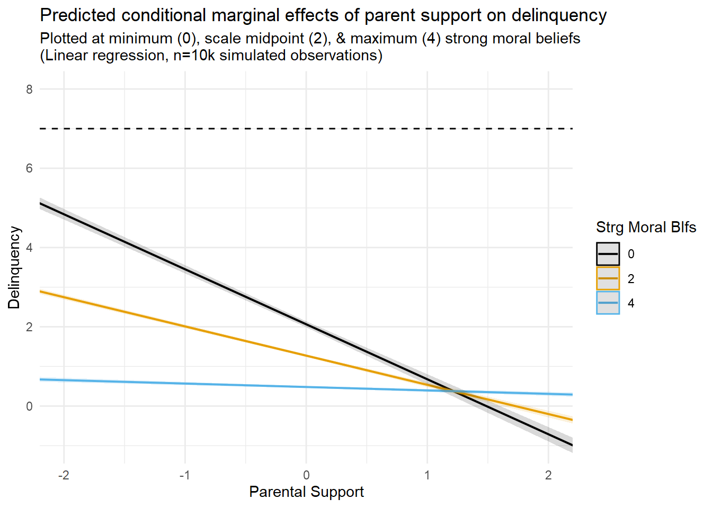
NOTE - FIX GGBLEND IMAGES. WORKING IN QUARTO (WITH CAIRO PNG) BUT NOT KNITTING PROPERLY IN HTML. USING WORKAROUND FOR NOW
While the linear model uncovered a sizeable interaction between parental support and moral beliefs, the plot reveals some areas of poor fit between the model predictions and the underlying data - including out of bounds predictions below “0” on predicted delinquency counts. You expected this, of course, because you read the Part 1 entry.
The second figure (third tab above) gives you a sense of the relatively poor fit of the model predictions by overlaying these prediction lines with a scatterplot of the relevant data (i.e., subset of Strong Moral Beliefs values equal to “0”, “2”, and “4”).
Let’s compare these results with the nonlinear model.
Mediation/Moderation Analysis
Call: psych::mediate(y = Delinquency ~ ParentSupport + (StrgMoralBlfs),
data = simdat3, n.iter = 10000)
The DV (Y) was Delinquency . The IV (X) was ParentSupport . The mediating variable(s) = StrgMoralBlfs .
Total effect(c) of ParentSupport on Delinquency = -0.44 S.E. = 0.01 t = -41 df= 9998 with p = 0
Direct effect (c') of ParentSupport on Delinquency removing StrgMoralBlfs = -0.33 S.E. = 0.01 t = -32.5 df= 9997 with p = 5.5e-221
Indirect effect (ab) of ParentSupport on Delinquency through StrgMoralBlfs = -0.11
Mean bootstrapped indirect effect = -0.11 with standard error = 0.01 Lower CI = -0.12 Upper CI = -0.1
R = 0.52 R2 = 0.27 F = 1894 on 2 and 9997 DF p-value: 0
To see the longer output, specify short = FALSE in the print statement or ask for the summary
Linear mediation model, decomposition, no EMint
Equivalent to traditional approach.
For all models, estimating effect of moving from exposure A=0 to exposure Astar=1
Causal Mediation Analysis
# Outcome regression:
Call:
glm(formula = Delinquency ~ ParentSupport + StrgMoralBlfs, family = gaussian(),
data = getCall(x$reg.output$yreg)$data, weights = getCall(x$reg.output$yreg)$weights)
Coefficients:
Estimate Std. Error t value Pr(>|t|)
(Intercept) 2.4296 0.0384 63.3 <2e-16 ***
ParentSupport -0.3335 0.0102 -32.5 <2e-16 ***
StrgMoralBlfs -0.4867 0.0115 -42.5 <2e-16 ***
---
Signif. codes: 0 '***' 0.001 '**' 0.01 '*' 0.05 '.' 0.1 ' ' 1
(Dispersion parameter for gaussian family taken to be 0.976)
Null deviance: 13456.2 on 9999 degrees of freedom
Residual deviance: 9759.3 on 9997 degrees of freedom
AIC: 28143
Number of Fisher Scoring iterations: 2
# Mediator regressions:
Call:
glm(formula = StrgMoralBlfs ~ ParentSupport, family = gaussian(),
data = getCall(x$reg.output$mreg[[1L]])$data, weights = getCall(x$reg.output$mreg[[1L]])$weights)
Coefficients:
Estimate Std. Error t value Pr(>|t|)
(Intercept) 3.23903 0.00863 375.3 <2e-16 ***
ParentSupport 0.22216 0.00867 25.6 <2e-16 ***
---
Signif. codes: 0 '***' 0.001 '**' 0.01 '*' 0.05 '.' 0.1 ' ' 1
(Dispersion parameter for gaussian family taken to be 0.745)
Null deviance: 7934.5 on 9999 degrees of freedom
Residual deviance: 7445.3 on 9998 degrees of freedom
AIC: 25435
Number of Fisher Scoring iterations: 2
# Effect decomposition on the mean difference scale via the regression-based approach
Direct counterfactual imputation estimation with
bootstrap standard errors, percentile confidence intervals and p-values
Estimate Std.error 95% CIL 95% CIU P.val
cde -0.333478 0.010772 -0.350883 -0.316 <2e-16 ***
pnde -0.333478 0.010772 -0.350883 -0.316 <2e-16 ***
tnde -0.333478 0.010772 -0.350883 -0.316 <2e-16 ***
pnie -0.108136 0.007431 -0.121240 -0.097 <2e-16 ***
tnie -0.108136 0.007431 -0.121240 -0.097 <2e-16 ***
te -0.441613 0.012128 -0.456681 -0.418 <2e-16 ***
pm 0.244865 0.014819 0.222072 0.271 <2e-16 ***
---
Signif. codes: 0 '***' 0.001 '**' 0.01 '*' 0.05 '.' 0.1 ' ' 1
(cde: controlled direct effect; pnde: pure natural direct effect; tnde: total natural direct effect; pnie: pure natural indirect effect; tnie: total natural indirect effect; te: total effect; pm: overall proportion mediated)
Relevant variable values:
$a
[1] 1
$astar
[1] 0
$mval
$mval[[1]]
[1] 0
First, note that CDE == PNDE == TNDE and that PNIE == TNIE …
This is because we set EMint=FALSE, which means we did not specify an exposure-mediator interaction. Of course, this does not mean there is no exposure-mediator interaction in the data. On the contrary, we simulated the data to include one! Rather, it just means we ignored the possibility by essentially fixing the exposure-mediator interaction parameter to equal “0” in our model.
This is also what happens by default in the traditional “product of coefficients” mediation approach. In fact, you can see that the estimates from both approaches converge in this case:
The pm or prop_med refers to proportion mediated. …
Also, since we have a continuous exposure variable, ParentSupport, we could define different meaningful contrasts (e.g., -1SD vs. 1SD; max vs. min). Since ParentSupport is standardized exposure variable, by setting a=0 and astar=1, I am specifying the exposure contrast as the predicted difference in Y at mean parental support values (ParentSupport=0) and +1SD parental support values (ParentSupport=1). The setting mval = list(0) indicates that I want controlled direct effect estimates to be calculated at m=0 (StrgMoralBlfs=0).
Linear mediation model, decomposition, with EMint
Now, let’s estimate another linear model in CMAverse but instead allow for the possibility of an exposure-mediator interaction.
#save estimates and intervals dataest3dat <-as.data.frame(est3[9:12]) %>%rownames_to_column("CMA_est")# drop proportion estimatesest3dat %>%filter(!CMA_est %in%c("pm", "pe", "pnie(prop)", "intref(prop)","intmed(prop)","cde(prop)", "int")) %>%mutate(CMA_est =factor(CMA_est, levels=c("intmed", "intref", "te", "tnie", "pnie", "tnde", "pnde", "cde"))) %>%# reorder the coefficients so that the largest is at the top of the plot# mutate(term = fct_reorder(CMA_est, effect.pe)) %>%ggplot(aes(effect.pe, CMA_est)) +geom_point() +geom_errorbarh(aes(xmin = effect.ci.low, xmax = effect.ci.high), height = .1) +# add in a dotted line at zerogeom_vline(xintercept =0, lty =2) +labs(x ="Estimated effects on linear difference scale",y =NULL,title ="Effect estimates from causal mediation decomposition" )
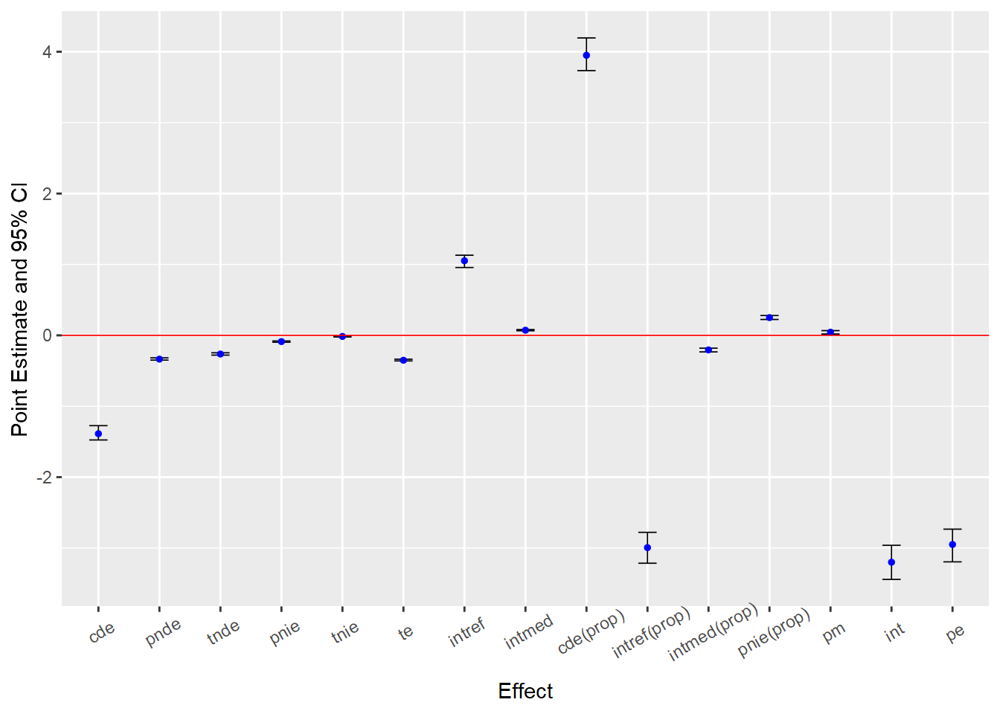
Code
summary(est3)
Causal Mediation Analysis
# Outcome regression:
Call:
glm(formula = Delinquency ~ ParentSupport + StrgMoralBlfs + ParentSupport *
StrgMoralBlfs, family = gaussian(), data = getCall(x$reg.output$yreg)$data,
weights = getCall(x$reg.output$yreg)$weights)
Coefficients:
Estimate Std. Error t value Pr(>|t|)
(Intercept) 2.0631 0.0386 53.5 <2e-16 ***
ParentSupport -1.3876 0.0356 -39.0 <2e-16 ***
StrgMoralBlfs -0.3957 0.0113 -34.9 <2e-16 ***
ParentSupport:StrgMoralBlfs 0.3253 0.0106 30.8 <2e-16 ***
---
Signif. codes: 0 '***' 0.001 '**' 0.01 '*' 0.05 '.' 0.1 ' ' 1
(Dispersion parameter for gaussian family taken to be 0.892)
Null deviance: 13456.2 on 9999 degrees of freedom
Residual deviance: 8913.1 on 9996 degrees of freedom
AIC: 27238
Number of Fisher Scoring iterations: 2
# Mediator regressions:
Call:
glm(formula = StrgMoralBlfs ~ ParentSupport, family = gaussian(),
data = getCall(x$reg.output$mreg[[1L]])$data, weights = getCall(x$reg.output$mreg[[1L]])$weights)
Coefficients:
Estimate Std. Error t value Pr(>|t|)
(Intercept) 3.23903 0.00863 375.3 <2e-16 ***
ParentSupport 0.22216 0.00867 25.6 <2e-16 ***
---
Signif. codes: 0 '***' 0.001 '**' 0.01 '*' 0.05 '.' 0.1 ' ' 1
(Dispersion parameter for gaussian family taken to be 0.745)
Null deviance: 7934.5 on 9999 degrees of freedom
Residual deviance: 7445.3 on 9998 degrees of freedom
AIC: 25435
Number of Fisher Scoring iterations: 2
# Effect decomposition on the mean difference scale via the regression-based approach
Direct counterfactual imputation estimation with
bootstrap standard errors, percentile confidence intervals and p-values
Estimate Std.error 95% CIL 95% CIU P.val
cde -1.387624 0.062795 -1.475369 -1.274 <2e-16 ***
pnde -0.335681 0.010910 -0.348675 -0.317 <2e-16 ***
tnde -0.263422 0.010099 -0.278990 -0.246 <2e-16 ***
pnie -0.087904 0.005337 -0.097235 -0.079 <2e-16 ***
tnie -0.015645 0.004974 -0.022773 -0.007 <2e-16 ***
te -0.351326 0.007715 -0.360669 -0.336 <2e-16 ***
intref 1.051943 0.055216 0.956593 1.130 <2e-16 ***
intmed 0.072258 0.005277 0.064121 0.081 <2e-16 ***
cde(prop) 3.949677 0.148703 3.733721 4.195 <2e-16 ***
intref(prop) -2.994209 0.140012 -3.213738 -2.778 <2e-16 ***
intmed(prop) -0.205674 0.014517 -0.233575 -0.181 <2e-16 ***
pnie(prop) 0.250206 0.017072 0.224156 0.280 <2e-16 ***
pm 0.044532 0.014744 0.019099 0.067 <2e-16 ***
int -3.199883 0.152844 -3.441728 -2.961 <2e-16 ***
pe -2.949677 0.148703 -3.194638 -2.734 <2e-16 ***
---
Signif. codes: 0 '***' 0.001 '**' 0.01 '*' 0.05 '.' 0.1 ' ' 1
(cde: controlled direct effect; pnde: pure natural direct effect; tnde: total natural direct effect; pnie: pure natural indirect effect; tnie: total natural indirect effect; te: total effect; intref: reference interaction; intmed: mediated interaction; cde(prop): proportion cde; intref(prop): proportion intref; intmed(prop): proportion intmed; pnie(prop): proportion pnie; pm: overall proportion mediated; int: overall proportion attributable to interaction; pe: overall proportion eliminated)
Relevant variable values:
$a
[1] 1
$astar
[1] 0
$mval
$mval[[1]]
[1] 0
Look at differences… due to sizeable exposure-mediator interaction. WHen we ignored the exposure-mediator interaction (i.e, by using traditional ab method or by setting EMint=FALSE in CMAverse), the “proportion mediated” estimate was about 25%. After accounting for the sizeable exposure-mediator interaction, the proportion mediated estimate dropped to 4.5%. Recall, the TNIE represents the “total” indirect effects of X on Y through M, including the “pure” indirect effect component (PIE) and the part of the exposure-mediator interaction that is due to mediation (INTmed). Since the PIE and INTmed components are of similar size yet opposite signs, they largely cancel each other out (0.25 vs. -0.21). This results in a very small “total” natural indirect effect estimate (TNIE) and, likewise, a small proportion mediated estimated (PM = TNIE/TE). However, the proportion of the total effect that is due to the pure indirect effect (PIE) remains approximately 25%.
One lesson should be apparent by now: If you are going to interpret any of these estimates, proportion or otherwise, it is important to know precisely what each estimate means and which causal contrasts you do (and do not) wish to make. Such determinations require an understanding of the various decomposition components described earlier and careful consideration of which components align best with your causal estimand of interest.
There are various other important differences across these model results. I will highlight only a couple of them.
First, the CDE is much larger in the linear model with the exposure-mediator interaction specified, and it is no longer equivalent to the PNDE or TNDE. This is because the effect of parental support varies across values of the mediator, and we estimated the CDE at m=0 (i.e., at the lowest value of strong moral beliefs) where the effect of parental support is strongest. You can see this in the regression effect plots we presented earlier. Had we estimated the CDE at a different value (e.g., m=4), the CDE would have been much smaller or even negligible in magnitude. The PNDE, however, is largely unchanged. Substantively, the PNDE indicates that doing astar=1 instead of a=0, or increasing from mean levels of parental support (a=0) to one-SD unit above the mean levels of parental support (astar=1), is predicted to reduce delinquency by -0.33 units on the linear difference scale in the absence of the exposure.
See Table 1 for description of all the various effect estimates generated by CMAverse in linear decomposition models… I dropped all proportion measures (i.e., everything after mediated interaction or INTmed) from custom coefficient plots. However, I kept proportion mediated (pm) in comparison tables.
Consistent with Section A in post. Proportion estimates tend to mess up scale when plotting… Also, I usually ignore proportion estimates… monotonicity assumptions… estimands of interest are not likely to be about proportions of total effect attributable to different components…
Now, we know the linear model is not appropriate for these data; this is frequently the case when analyzing criminological data as well. Yet, my hope is that these poor-fitting models help ease the transition given the familiarity that many readers will likely have with linear models. As you will soon see, output and interpretations get a bit more complicated with nonlinear models due to changes in the outcome scale.
Below, I will estimate models with and without EM interactions again, but this time I will specify a Poisson distribution for the outcome variable. This means that the predicted contrasts will be described on the event rate ratio scale instead of the linear difference scale. See Table 2 here for descriptions of the various causal estimates on the ratio scale that are output by CMAverse, and the cmest documentation for for descriptions of which causal estimates are generated under different modeling specifications.
#save estimates and intervals dataest5dat <-as.data.frame(est5[9:12]) %>%rownames_to_column("CMA_est")# drop proportion estimatesest5dat %>%filter(!CMA_est %in%c("pm", "pe", "ERpnie(prop)", "ERintref(prop)","ERintmed(prop)","ERcde(prop)", "int", "ERpnie", "ERintmed", "ERintref", "ERcde")) %>%mutate(CMA_est =factor(CMA_est, levels=c("Rte", "Rtnie", "Rpnie", "Rtnde", "Rpnde", "Rcde"))) %>%# reorder the coefficients so that the largest is at the top of the plot# mutate(term = fct_reorder(CMA_est, effect.pe)) %>%ggplot(aes(effect.pe, CMA_est)) +geom_point() +geom_errorbarh(aes(xmin = effect.ci.low, xmax = effect.ci.high), height = .1) +# add in a dotted line at zerogeom_vline(xintercept =c(0,1), lty =2) +labs(x ="Estimated effects on risk ratio scale",y =NULL,title ="Effect estimates from causal mediation decomposition (risk ratios)" )
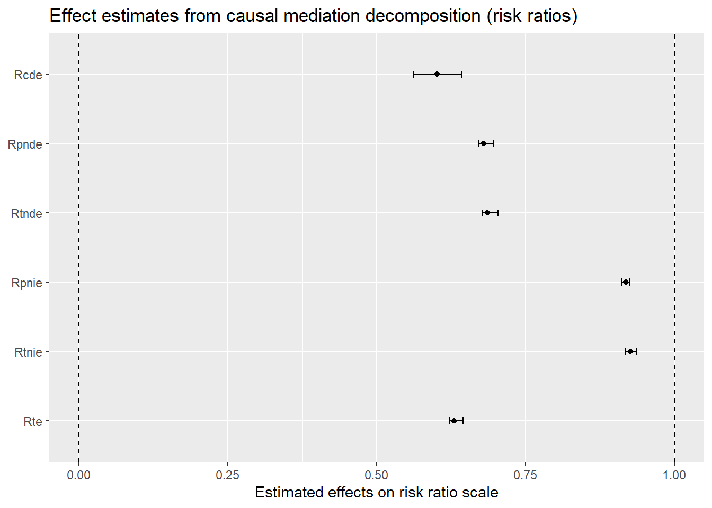
Code
# drop proportion estimatesest5dat %>%filter(!CMA_est %in%c("pm", "pe", "ERpnie(prop)", "ERintref(prop)","ERintmed(prop)","ERcde(prop)", "int", "Rte", "Rtnie", "Rpnie", "Rtnde", "Rpnde", "Rcde")) %>%mutate(CMA_est =factor(CMA_est, levels=c("ERpnie", "ERintmed", "ERintref", "ERcde"))) %>%# reorder the coefficients so that the largest is at the top of the plot# mutate(term = fct_reorder(CMA_est, effect.pe)) %>%ggplot(aes(effect.pe, CMA_est)) +geom_point() +geom_errorbarh(aes(xmin = effect.ci.low, xmax = effect.ci.high), height = .1) +# add in a dotted line at zerogeom_vline(xintercept =0, lty =2) +labs(x ="Estimated effects on excess risks scale",y =NULL,title ="Effect estimates from causal mediation decomposition (excess risks)" )
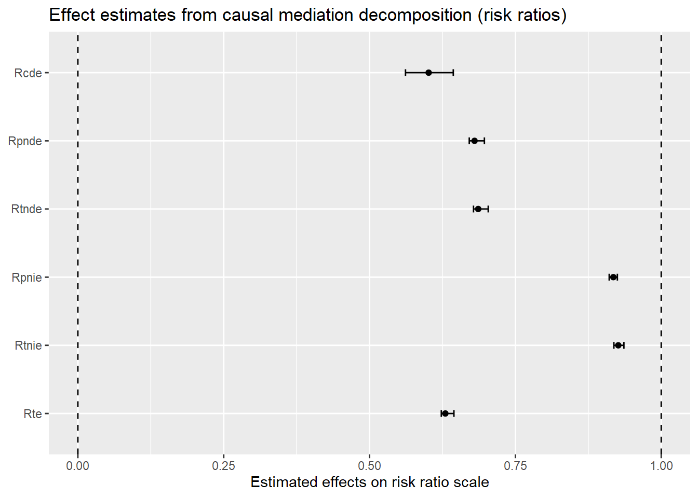
Code
summary(est5)
Causal Mediation Analysis
# Outcome regression:
Call:
glm(formula = Delinquency ~ ParentSupport + StrgMoralBlfs + ParentSupport *
StrgMoralBlfs, family = poisson(), data = getCall(x$reg.output$yreg)$data,
weights = getCall(x$reg.output$yreg)$weights)
Coefficients:
Estimate Std. Error z value Pr(>|z|)
(Intercept) 0.88795 0.03903 22.75 <2e-16 ***
ParentSupport -0.50865 0.02806 -18.13 <2e-16 ***
StrgMoralBlfs -0.38554 0.01229 -31.37 <2e-16 ***
ParentSupport:StrgMoralBlfs 0.04146 0.00939 4.42 1e-05 ***
---
Signif. codes: 0 '***' 0.001 '**' 0.01 '*' 0.05 '.' 0.1 ' ' 1
(Dispersion parameter for poisson family taken to be 1)
Null deviance: 14602 on 9999 degrees of freedom
Residual deviance: 10763 on 9996 degrees of freedom
AIC: 22579
Number of Fisher Scoring iterations: 5
# Mediator regressions:
Call:
glm(formula = StrgMoralBlfs ~ ParentSupport, family = gaussian(),
data = getCall(x$reg.output$mreg[[1L]])$data, weights = getCall(x$reg.output$mreg[[1L]])$weights)
Coefficients:
Estimate Std. Error t value Pr(>|t|)
(Intercept) 3.23903 0.00863 375.3 <2e-16 ***
ParentSupport 0.22216 0.00867 25.6 <2e-16 ***
---
Signif. codes: 0 '***' 0.001 '**' 0.01 '*' 0.05 '.' 0.1 ' ' 1
(Dispersion parameter for gaussian family taken to be 0.745)
Null deviance: 7934.5 on 9999 degrees of freedom
Residual deviance: 7445.3 on 9998 degrees of freedom
AIC: 25435
Number of Fisher Scoring iterations: 2
# Effect decomposition on the rate ratio scale via the regression-based approach
Direct counterfactual imputation estimation with
bootstrap standard errors, percentile confidence intervals and p-values
Estimate Std.error 95% CIL 95% CIU P.val
Rcde 0.601306 0.024879 0.561609 0.644 <2e-16 ***
Rpnde 0.679983 0.008375 0.670925 0.697 <2e-16 ***
Rtnde 0.686275 0.008255 0.678196 0.703 <2e-16 ***
Rpnie 0.917913 0.004777 0.910813 0.925 <2e-16 ***
Rtnie 0.926407 0.005999 0.918778 0.936 <2e-16 ***
Rte 0.629941 0.007192 0.623013 0.645 <2e-16 ***
ERcde -1.313409 0.061665 -1.401161 -1.198 <2e-16 ***
ERintref 0.993391 0.058941 0.890375 1.074 <2e-16 ***
ERintmed 0.032045 0.001999 0.028955 0.035 <2e-16 ***
ERpnie -0.082087 0.004777 -0.089186 -0.075 <2e-16 ***
ERcde(prop) 3.549183 0.157305 3.281685 3.763 <2e-16 ***
ERintref(prop) -2.684410 0.155869 -2.910019 -2.422 <2e-16 ***
ERintmed(prop) -0.086595 0.005263 -0.095170 -0.078 <2e-16 ***
ERpnie(prop) 0.221822 0.013324 0.201942 0.246 <2e-16 ***
pm 0.135227 0.012221 0.116842 0.156 <2e-16 ***
int -2.771005 0.160277 -3.003940 -2.501 <2e-16 ***
pe -2.549183 0.157305 -2.763041 -2.282 <2e-16 ***
---
Signif. codes: 0 '***' 0.001 '**' 0.01 '*' 0.05 '.' 0.1 ' ' 1
(Rcde: controlled direct effect rate ratio; Rpnde: pure natural direct effect rate ratio; Rtnde: total natural direct effect rate ratio; Rpnie: pure natural indirect effect rate ratio; Rtnie: total natural indirect effect rate ratio; Rte: total effect rate ratio; ERcde: excess relative rate due to controlled direct effect; ERintref: excess relative rate due to reference interaction; ERintmed: excess relative rate due to mediated interaction; ERpnie: excess relative rate due to pure natural indirect effect; ERcde(prop): proportion ERcde; ERintref(prop): proportion ERintref; ERintmed(prop): proportion ERintmed; ERpnie(prop): proportion ERpnie; pm: overall proportion mediated; int: overall proportion attributable to interaction; pe: overall proportion eliminated)
Relevant variable values:
$a
[1] 1
$astar
[1] 0
$mval
$mval[[1]]
[1] 0
Rate ratio interpretations … accessible discussions of interpreting risk and rate ratio estimates, see here and here.
“Excess rate ratio” (or “excess risk ratio” in logistic regressions) may help with interpreting relative effect estimates … I prefer these to proportion estimates in nonlinear models for assessing relative contributions of mediation, interaction, & direct effects. For more information on relative excess ratio estimates, see VanderWeele and Tchetgen Tchetgen (2014). VanderWeele and Knol’s 2014 tutorial on interaction is also helpful here; additionally, it contains a wealth of information that may be new to readers about estimating and interpreting interactions, including distinctions between concepts such as statistical, mechanistic, and sufficient cause interactions.
Do NOT rely on statistical significance of the interaction coefficient to make this determination as those tests are notoriously underpowered; also, as I discussed in the first post in this series, such inferences are particularly unreliable in nonlinear models.↩︎
At this point, you might be wondering: “Do I really need to do this? The [insert] theory I am testing does not predict such an interaction!” Well, failure to examine and adjust for the possibility of an exposure-mediator interaction is equivalent to forcing your model of the data generating process to conform to a strong and potentially incorrect theoretical assumption about underlying data generating processes. In SEM parlance, it is equivalent to “fixing” the effect of X on Y through M to be the same at all values of M. In situations where the effect of X on Y indeed varies across strata of M, failure to account for it could result in biased or incomplete inferences. In contrast, allowing for and decomposing a potential exposure-mediator interaction is, in SEM terms, akin to “freeing” that parameter, thus permitting a test of that strong theoretical assumption. In situations where no such interaction exists, the magnitude of the interaction will approach zero, and traditional and “causal” mediation approaches (e.g., “controlled” and “natural” effect estimates) will converge to the same values. In those situations, decomposition would be unnecessary yet nonetheless informative. In short, there is substantial upside and little downside apart from learning the skills to testing and accounting for exposure-mediator interactions whether or not one exists, yet there are potentially substantial inferential risks to not doing so when one exists. So, just how a priori confident are you in that likely imprecise and discursive theory of yours?↩︎
Are you wondering what the (Y11 - Y10 - Y01 + Y00) term represents? Well, you can think of it as contrasting the effect of X (i.e., doing X=1 - doing X=0) in the mechanism’s presence (M=1) versus its absence (M=0). Alternatively, you can also think of it as contrasting the effect of M (i.e,. doing M=1 - doing M=0) in the exposure’s presence (X=1) versus its absence (X=0). Let’s use the latter to show our work:
(Effect of M | X=1) - (Effect of M | X=0)
= (Y11 - Y10) - (Y01 - Y00)
From here, we just do a bit of basic algebra:
= Y11 - Y10 + (-1)(Y01 - Y00)
= Y11 - Y10 - Y01 + Y00↩︎
Similar, but not identical. For instance, I reduced the magnitude of a coefficient (from -0.5 to -0.3) to weaken the causal effect of parental support on moral beliefs, which moves it closer to the range of plausible effect sizes of many theorized causes of attitudes and behaviors observed in criminology.↩︎
Of course, in many situations, a “direct effect” estimate itself may (and likely does) represent an aggregate or composite summary of other indirect effects operating through unmeasured mechanisms.↩︎
Again, traditional and causal mediation approaches both rest upon similar confounding assumptions. In addition to these assumptions, there are lots of other considerations as well when deciding whether a mediation model is appropriate for your situation (e.g., cross-sectional data). Too often, a mediation model may not be appropriate, but researchers use them anyway. Still, even in situations where the appropriateness of their assumptions are dubious, I think most social science areas would benefit generally from researchers thinking carefully about and transparently stating the assumptions they are making when interpreting results - whether results are from mediation models or otherwise. Likewise, reading more about causal mediation methods may help towards these ends, as the explicit and formal statement of assumptions necessary to generate valid causal inferences from mediation models is an important area of emphasis in the causal mediation literature.↩︎
Note that the Y(do[X=1],do[MX=0]) may be an unobservable counterfactual condition (e.g., in the presence of mediation). We cannot in fact simultaneously observe Y with X set to =1 and M set to equal its expected value when X=0. After all, if we do X=1 and X has an effect on M, then M would also change to its (population average) value at X=1; M would not stay at its expected value when X=0! These slides (especially slide 12) offer a concise description of this issue.↩︎


{kind=link}